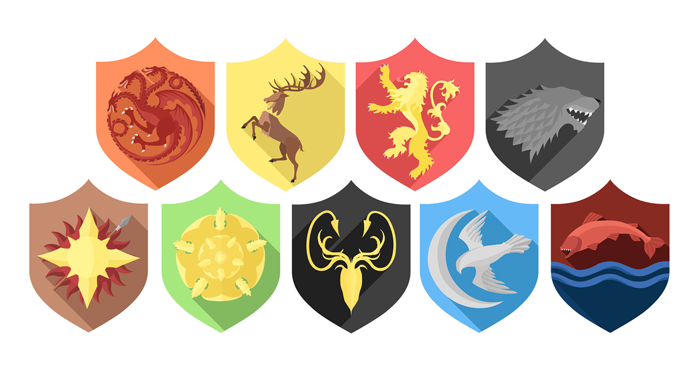
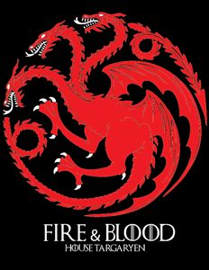

Game Of Thrones Evrenindeki Büyük Haneler


Targaryen Hanesi
Targaryen Ailesi, Dragonstone Adası'nda hüküm sürerken, Aegon'un fetihleriyle Westeros'un tamamına hükmetmiştir. Ejderhalara olan bağlılıkları ve Valyria'nın kayıp bilgisiyle tanınan Targaryen'ler, uzun süre egemen olmuşlardır.
Lannister Hanesi
Lannister Ailesi, Batı Krallığı'nda Casterly Rock'tan yönetir ve servetleriyle ünlüdür. Ailenin başı Tywin Lannister, Westeros’un en zeki ve acımasız liderlerinden biridir. Lannister'lar, güç ve zenginlik için her türlü ittifak yapmaya hazırdır.
Baratheon Hanesi
Baratheon Ailesi, Stormlands'tan gelir ve Storm's End kalesinde yaşarlar. Aile, Robert Baratheon'un Demir Taht'ı ele geçirmesiyle Westeros'ta zirveye ulaşmış, ancak daha sonra iç savaşla parçalanmıştır. Baratheon'lar, cesur ve savaşçı bir halktır.
Stark Hanesi
Stark Ailesi Kuzey'in en güçlü ailesidir ve Winterfell'de hüküm sürerler. Kışın sert olduğu topraklarda, onurlarına büyük önem verirler ve Kuzey halkı tarafından saygı görürler. Bu aile, sadakat, cesaret ve adaletle tanınır.
Greyjoy Hanesi
Greyjoy Ailesi, Demir Adalar'dan gelir ve denizci bir halktır. Pyke kalesinde yaşayan bu aile, özellikle deniz korsanlığıyla ünlüdür ve özgürlükçü bir yaşam tarzına sahiptir. Greyjoy'lar, sürekli olarak Westeros'un büyük evlerine karşı bağımsızlıklarını savunmuşlardır.
Tyrell Hanesi
Tyrell Ailesi, Reach bölgesinde, zengin tarım topraklarına hükmeder. Highgarden kalesi, Tyrell'ların kalbidir ve aile, zenginliği ve stratejik evlilikleriyle tanınır. Tyrell'lar, bazen diplomasiyle bazen de ordularıyla Westeros'un en güçlü ailelerinden biri olmuşlardır.
Martell Hanesi
Martell Ailesi, Dorne bölgesinden gelir ve Sunspear'da yaşar. Dorne’un sıcak çöllerine ve güçlü geleneklerine bağlı olan Martell'ler, özgürlükçü, savaşçı ve bağımsız bir zihniyete sahiptirler. Dorne, diğer bölgelerden farklı olarak özgür bir yaşam biçimi benimsemiştir.